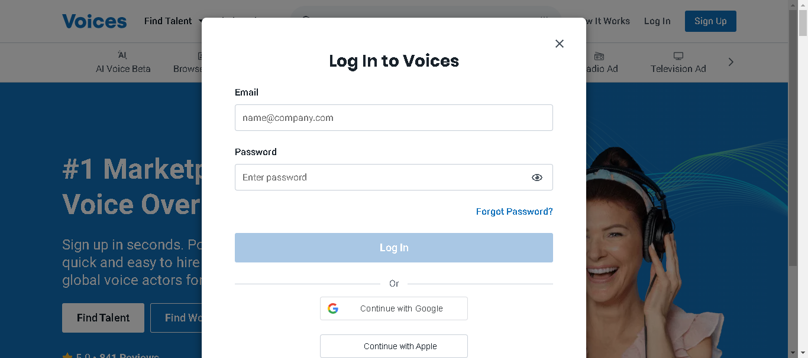
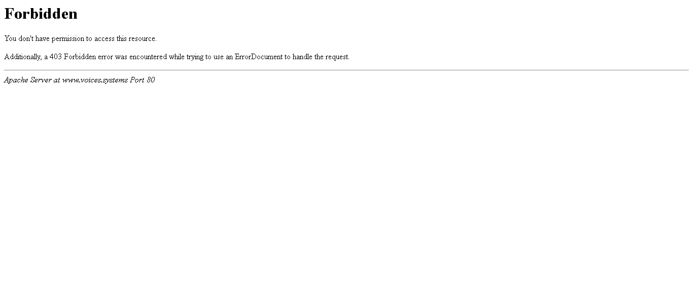

-
HyperLink Validation
8:00:06 pm / 01:00:55:169 Fail
HyperLink Validation
03.04.2024 8:00:06 pm 03.04.2024 9:01:01 pm 01:00:55:169 · #test-id=1PassValidate All Hyperlink On Main Navigation Panel For Non SignIn UserGiven User Open Home PageAnd User click on How it works link and validate urlAnd User click on log in link and validate urlAnd User click on sign up link and validate urlPassValidate All Hyperlink On Sub Navigation Panel For Non SignIn UserGiven User Open Home PageThen Validate all sub module hyperlinkFailValidate Sub Footer For Non SignIn UserGiven User Open Home PageAnd User validate all by language links for non login usercom.voices.stepDefinition.Hooks.addScreenshot(io.cucumber.java.Scenario)And User validate all by category links for non login userStep skippedAnd User validate all by style links for non login userStep skippedAnd User validate all by location links for non login userStep skippedPassValidate All Footer Links For Non SignIn UserGiven User Open Home PageAnd User validate all company links under footer for Non Sign userAnd User validate all for client links under footer for Non Sign userAnd User validate all for talent links under footer for Non Sign userAnd User validate all social media links under footer for Non Sign userAnd User validate all footer links under footer for Non Sign userPassValidate All HyerLink On Main Navigation Panel For Client SingIn UserGiven User Open Home PageAnd User login with client credentialsAnd User Click on post job and Validate url open successfullyAnd User Click on jobs and Validate all hyperlinksAnd User Click on Messages and Notifications hyperlinksAnd User Click on user icon and Validate all hyperlinksPassValidate All Hyperlink On Sub Navigation Panel For Client SignIn UserGiven User Open Home PageAnd User login with client credentialsThen Validate all sub module hyperlinkFailValidate All Hyperlink On Footer For Client SignIn UserGiven User Open Home PageAnd User login with client credentialscom.voices.stepDefinition.Hooks.addScreenshot(io.cucumber.java.Scenario)imageThen User validate all company link under footer of pageStep skippedThen User validate all resources link under footer of pageStep skippedThen User validate all social media link under footer of pageStep skippedThen User validate all footer link under footer of pageStep skippedFailValidate All HyerLink On Main Navigation Panel For Talent Guest SingIn UserGiven User Open Home PageAnd User login with Talent Guest credentialsAnd User over on jobs and Validate all hyperlinksAnd User Click on payments and Validate all hyperlinksAnd User Click on Messages and validate hyperlinksAnd User Click on helps and Validate all hyperlinkscom.voices.stepDefinition.Hooks.addScreenshot(io.cucumber.java.Scenario)imageAnd User click on user icon and validate all hyperlinkStep skippedPassValidate All Hyperlink On Footer For Talent Guest SignIn UserGiven User Open Home PageAnd User login with Talent Guest credentialsThen User validate all company link under footer of pageThen User validate all resources link under footer of page for talent userThen User validate all social media link under footer of pageThen User validate all footer link under footer of page
-
org.junit.ComparisonFailure
1 tests
org.junit.ComparisonFailure
1 failedStatus Timestamp TestName Fail 20:51:45 pm And User Click on helps and Validate all hyperlinks HyperLink Validation.Validate All HyerLink On Main Navigation Panel For Talent Guest SingIn User.And User Click on helps and Validate all hyperlinks -
org.openqa.selenium.TimeoutException
3 tests
org.openqa.selenium.TimeoutException
3 failedStatus Timestamp TestName Fail 20:15:08 pm And User validate all by language links for non login user HyperLink Validation.Validate Sub Footer For Non SignIn User.And User validate all by language links for non login userFail 20:18:14 pm com.voices.stepDefinition.Hooks.addScreenshot(io.cucumber.java.Scenario) HyperLink Validation.Validate Sub Footer For Non SignIn User.com.voices.stepDefinition.Hooks.addScreenshot(io.cucumber.java.Scenario)Fail 20:45:40 pm And User login with client credentials HyperLink Validation.Validate All Hyperlink On Footer For Client SignIn User.And User login with client credentials
-
@HyperLink
9 tests
@HyperLink
6 passed 3 failedStatus Timestamp TestName Pass 20:00:06 pm Validate All Hyperlink On Main Navigation Panel For Non SignIn User HyperLink Validation.Validate All Hyperlink On Main Navigation Panel For Non SignIn UserPass 20:01:43 pm Validate All Hyperlink On Sub Navigation Panel For Non SignIn User HyperLink Validation.Validate All Hyperlink On Sub Navigation Panel For Non SignIn UserFail 20:14:51 pm Validate Sub Footer For Non SignIn User HyperLink Validation.Validate Sub Footer For Non SignIn UserPass 20:21:36 pm Validate All Footer Links For Non SignIn User HyperLink Validation.Validate All Footer Links For Non SignIn UserPass 20:28:05 pm Validate All HyerLink On Main Navigation Panel For Client SingIn User HyperLink Validation.Validate All HyerLink On Main Navigation Panel For Client SingIn UserPass 20:32:18 pm Validate All Hyperlink On Sub Navigation Panel For Client SignIn User HyperLink Validation.Validate All Hyperlink On Sub Navigation Panel For Client SignIn UserFail 20:45:23 pm Validate All Hyperlink On Footer For Client SignIn User HyperLink Validation.Validate All Hyperlink On Footer For Client SignIn UserFail 20:48:07 pm Validate All HyerLink On Main Navigation Panel For Talent Guest SingIn User HyperLink Validation.Validate All HyerLink On Main Navigation Panel For Talent Guest SingIn UserPass 20:53:33 pm Validate All Hyperlink On Footer For Talent Guest SignIn User HyperLink Validation.Validate All Hyperlink On Footer For Talent Guest SignIn User
Started
Mar 4, 2024 08:00:01 pm
Ended
Mar 4, 2024 09:01:02 pm
Features Passed
0
Features Failed
1
Features
Scenarios
Steps
Timeline
Tags
| Name | Passed | Failed | Skipped | Others | Passed % |
|---|---|---|---|---|---|
| @HyperLink | 6 | 3 | 0 | 0 | 66.667% |